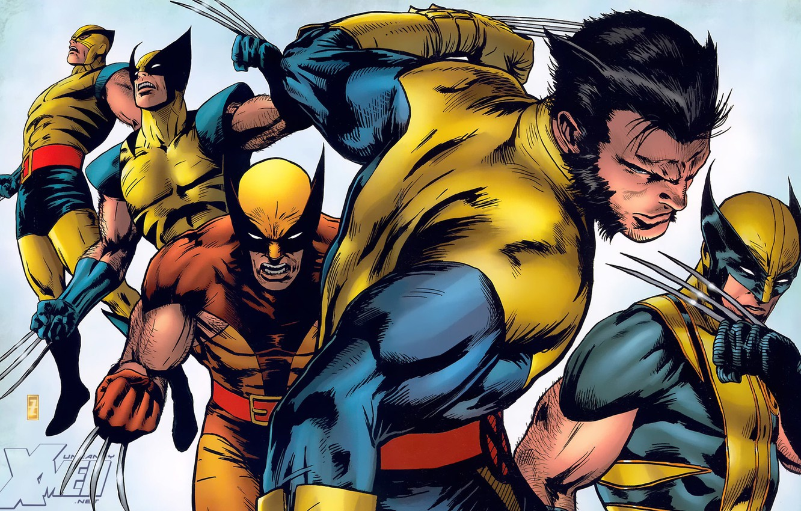
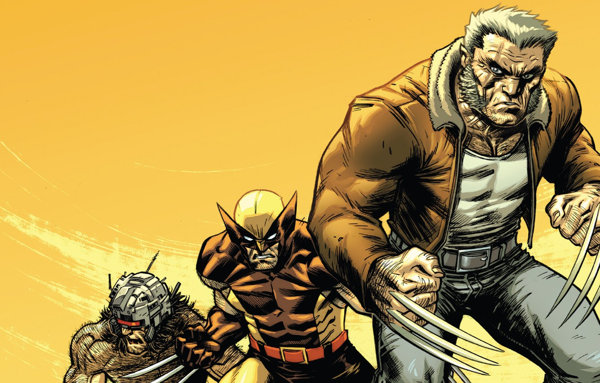

 James "Logan" Howlett aka Wolverine is a Canadian Mutant and member of the X-Men. Born more than a century ago, the long-lived man has the rage of a beast and the soul of a Samurai. Logan's once mysterious past is filled with blood, war and betrayal. He describes himself as being; "the best there is at what he does, but what he does best isn't very nice". Logan possesses an accelerated healing factor, keenly enhanced senses and bone claws in each hand. His bones were coated in Adamantium, an almost indestructible metal, as part of the Weapon X program, to make him their ultimate weapon. He would later join the X-Men a team of heroes fighting for peace between humans and mutants.
Logan's life began in Cold Lake, Alberta, Canada, sometime between 1882 and 1885. The mutant who would come to be known simply as "Logan" was born James Howlett, the illegitimate son of Elizabeth Howlett (who was married to John Howlett, owner of a large estate) and the Howletts' groundskeeper, Thomas Logan. As a boy, James was notably frail and prone to bouts of allergic attacks. He was largely neglected by his mother, who had been institutionalized for a time following the death of her first son, John Jr.
James spent most of his early years on the Howlett Estate grounds with two playmates that lived at the estate with him: Rose O'Hara, a red-headed Irish girl who was brought in from town to be a companion to young James, and a boy nicknamed "Dog", Thomas Logan's son (and James's half-brother). The children were close friends, but, as they reached adolescence, the abuse inflicted upon Dog warped his mind. Dog made unwanted advances towards Rose, which James reported to his father. In retaliation, Dog killed James' puppy, leading to the expulsion of Thomas and Dog from the estate. Thomas, in a drunken stupor and armed with a shotgun, invaded the Howlett Estate with his son and attempted to take his former lover Elizabeth with him. John, Sr. attempted to stop him and Thomas shot him in the head, in cold blood. James had just entered the room when this occurred and his mutation finally manifested: bone claws extended from the backs of his hands and he attacked the intruders with uncharacteristic ferocity, killing Thomas and scarring Dog's face with three claw marks.
 James with Rose’s help decided to flee the mansion after Dog told the police that Rose was the one who killed John and Elizabeth Howlett, the duo decided to ask for the help of James’ grandfather who gave them some money and told them to run away. The duo then found themselves in the Yukon Territories in Canada, taking refuge in a British Columbia stone quarry, under the guise of being cousins. James also assumed the name of "Logan," in order to hide his identity. Here, Logan would become one of the most respected men by the miners for his hard work and eventually gained the nickname “Wolverine.”
As time passed, Logan’s powers grew; he became stronger, his healing factor slowly removed the traumatic memories of his childhood, he accepted his feral nature and he started to hunt with a pack of wolves. During this period, Logan developed strong feelings for Rose, but could not act on them for the sake of their guise as cousins. Smitty, who had been mentoring Logan all these years, had also grown close to Rose and the two eventually fell in love and became engaged, much to the scorn and surprise of Logan, who later accepted the situation for the sake of Rose's happiness. But as Logan accepted Rose’s decision and made sure that both her and Smitty could leave the mine and live a peaceful life, someone from Logan’s past came back looking for revenge: Dog. Dog attacked Logan and started to beat him up in front of Rose but in the midst of the fight, Logan finally remembered who Dog was and what happened on the night his father was killed.